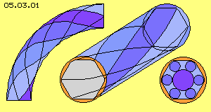
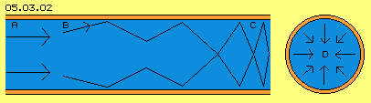
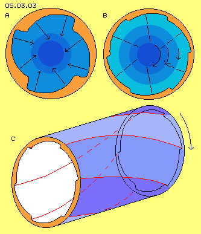
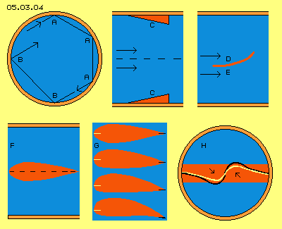

| Alfred Evert | 05.11.2006 |
05.03. Potential-Twist-Pipe
Round-Edge-Pipe

Some years ago at my first Fluid-Technology, I made the proposal of a Potential-Twist-Pipe, like schematic shown at picture 05.03.01. The cross-sectional view shows a polygon with rounded edges. Within these edges come up side flows in shape of rotating cylinders, so the central main stream runs at ´roller-bearings´ without friction at the wall. The fluid may not flow only longitudinal through the pipe but with twist, by which these ´rollers´ are build up. In order to keep up the twist, the whole pipe is twisted. Especially necessary is twist-flow within pipe-bends, because only by this measurement all tracks show same lengths.
Twist-flow within pipes not only reduces the resistance, but also less sediments settle within pipes, water remains ´alive´ or emulsions keep more homogenous. I had ´enormous demands´ for these pipe systems, however I am no businessman and can deliver only some ideas. Some companies took that idea and for example improved the efficiency of heat-changers remarkably.
Self-blocking System 
The problem here is, all pressures affected by the round wall of a pipe show radial and meet at the centre, like sketched by black arrows at the cross-sectional view (D). These pressures again reject mutually into radial directions, so the movements mostly are running cross to pipes axis. A ´dense plug´ hinders the throughput lastly in total. The theoretic formula of resistance are known and really approved often. However the existing problems of transporting fluids through pipes still demand enormous energies and costs.
Segment-Pipe
At picture 05.03.03 at A is drawn a cross-sectional view of a pipe and its wall is build by four segments. Each segment is nearby one quarter of a circle, however the four circle-centres are not identical with the centre of the pipe. One end of each segment is shifted a little bit towards the pipe-centre. The differences are bridged by S-shaped parts of the wall.
Naturally the fluid is rejected off the walls into any directions, in total however perpendicular to the wall. These motions- respective pressures-directions here are marked by arrows. It´s logic, now these pressure-directions no longer meet at the pipe-centre (like at previous picture at D), but are affecting ´tangential´ around the centre.
So the particles of the fluid no longer collide frontal within the narrow central space, but the particles in principle ´escape´ mutually at circled tracks. Prevailingly thus results the situation of ´rear-end-collisions´ of previous chapter. The central area (dark blue) like its environment (blue more light) thus becomes turning.

At previous discussed motion processes of hurricanes or tornados was stated, at the beginning a central nucleus of rotation exists, which becomes accelerated by the slower moving environment. Here however, flow into longitudinal direction of pipe, at first produces pressure from outside towards centre. Finally by that ordered environment pressure (diagonal inward) lastly results that advantageous potential vortex.
At a normal resp. ´rigid vortex´ the particles move at different radius, however all times by same angle-speed. Opposite, at the potential-vortices the particles inside move faster than particles more outside, like marked at B by arrows of different lengths. Thus only the potential-vortices have internal differences of speeds which are the prerequisite for previous ´suction-effect of fast flows´.
The vortex within a segment-pipe thus is initiated from outside (resp. the wall), nevertheless becomes a self-accelerating system. That vortex ´pulls´ particles towards the centre, i.e. inside of that vortex not only exists faster speed but also higher density. Opposite, near the wall exists less density and thus less resistance by friction comes up. Again it´s to observe, the ´energy-growth´ at the centre needs no external energy input. Only the skilful shape of the wall, working purely passive by just normal rejections, results that self-organizing system.
Twisted Pipe
That reflection however is not absolutely harmful because the twist-flow is not only circling but also a longitudinal motion. The particles thus hit onto these surfaces by angles into diagonal directions. At the other hand these angles would be more flat, if the pipe as a whole is twisted, like schematic shown at this picture at C.
Based on the inclined segments, this example shows a twist flow clock-wise. Into same sense of turning, the pipe could be ´screwed´ as a whole, so these bridge-parts no longer show parallel to the longitudinal axis but some diagonal. It depends on each application of that pipe system, which ´twist-angle´ shows the best results.
Advantageous Twist-Flow
Upside was assumed (perfectly justified) rejection won´t occur mirrored but particles fly back more steep. These situations schematic are sketched at B. Also this result is not bad but advantageous. There comes up inward showing pressure component, which automatic builds up potential vortex (like mentioned upside). So by that simple picture advantages of twist-flow already become obvious.
Guide Fins 
The guide fins have a pressure-surface D, alongside which the fluid is pressed into the turning sense. Naturally that process affects resistance, so the forward movement is delayed some kind. The opposite side E of the guide fin builds a suction area, into which the particles of the fluid fall into turning sense, compensating previous losses.
That technique may well achieve twist-flows and Schauberger demonstrated that effect with great success. If however only one single guide fins is installed, at long distances no clear twist-flow is guarantee. As an alternative, the twist flow is not initiated from the border but directly organized at the core of the potential twist.
Twist only by Suction
From outside to inside this (originally symmetric) body should change its shape like sketched at G from top to bottom. The ´nose´ like the end of the body should shift to one side, resulting a wing-profile. At the suction side (here each upside) fluid falls downside increasingly faster. This flow goes on also behind the edge and the faster flow affects like suction onto the slower flow of the surface below. This ´pressure-side of that wing´ is bended some down, however the fluid won´t affect pressure, because ´sucked-off´ by previous faster flow.
This body affects a twist motion within the pipe, if installed symmetric to the pipe-centre. At cross-sectional view (H) through the pipe (resp. schematic also through that body) the line of nose is marked yellow and line of the rear end is marked black. However the width of that winded wing is much over-drawn, real blades of that ´stator-guide-wheel´ could be constructed much smaller.
This principle shape shows two special properties: within the centre of the pipe comes up a potential vortex which will accelerate autonomously. So this advantageous motion patter of a twist flow will continue relative long within the pipe. At the other hand, that partial deviation of flow into turning motion is achieved without any pressure, i.e. without resistance and delay of the longitudinal movement. As the particles fall into a suction area (respective faster flow) by their molecular speed, the flow in total will be accelerated.
For free
At these processes never occurs any energy-transmission (with the known problems of energy-constant), but only the order of movements is improved. No energy-input is demanded, because motions exist all times in any directions and only a selection of momentary fitting motions must be done. That´s achieved only by organizational measures (as a rule by accordingly shaped walls). These work purely ´passive´ and achieve a better order only by permitting a useful structures of motions.
Billions of kilometer of pipes are installed, all over the world, for the transport of fluids (oil, gas, water, air-pressure, many other liquids and gases). The friction within common pipes needs immense energy-input - and these huge costs could be reduced by previous constructions, by sure.
At previous chapters was stated, a wall well has effects onto flows, e.g. based on friction at the ground at previous hurricane. This becomes especially obvious when fluid is pushed through pipes. At the beginning well can exist ´laminar flows´, however short distance later come up vortices alongside of the wall. These turbulent flows result resistance and it depends only on the relation of diameter and length until any pipe system becomes self-closing. It makes no sense to increase the pressure because the resistance increases disproportionately.
Previous Potentialtwistpipes might reduce that problem, obviously however this solution was not reasonable or simple enough. That´s why I offered a new proposal which concerns the ´core-problem´ and thus could be accepted easier.
At this picture at B a corresponding cross-section of a pipe is drawn, for example now with six segments. The pressures affected from the segments, each right angle to its surface, are marked by dotted lines. The pressures are no longer directed radial, but are showing some tangential. The ring- respective cylinder-shaped fluid layers further inside (each marked by darker blue) thus are driving a twist-flow. The pressure-lines inside meet that kind, the fluid can ´escape´ only by faster turning motion.
The segment surfaces, some inclined, have a positive effect without any doubt as they result the wanted twisted flow in shape of a potential vortex. Disadvantageous however are the S-shaped bridge-parts between the segments. Naturally also at their surfaces exists rejection, which represents a flow component cross to twist motion.
At picture 05.03.04 upside left is shown cross-sectional view of round pipe, within which twist flow exists (again clock-wise). Fluid flows around at circles, inside free and outside along wall. Anywhere exist also motion components into direction towards wall, for example by angle shown at A. This motion is rejected and is not harmful as particles all times fly back into general direction of twist.
Cross within a pipe, from wall to wall, one can put a flow-conform body (like sketched by longitudinal cross-sectional view at F) without loss of throughput. The free cross-sectional surface is reduced, however correspondingly faster flows the fluid through that bottleneck (theoretic calculable by formula and really approved). The explanation of that effect of flow-conform bodies is described at previous chapter at picture 05.02.05.
Whoever got convinced by these proposals of the ´Round-Edge-Pipe´ or the ´Suction-Fins´ or the ´Segment-Pipe´ may use these conceptions as he likes it for free. These examples should point out, one may not be contented with known formula and common scientific sentences, but should search for better solutions all times. If the behaviour of particles is observed exactly, the reason for ´phenomenal´ effects are easy to detect and naturally the affects can be used much more efective.
05.13. Explosion / Implosion
Fluid-Technology - Basics